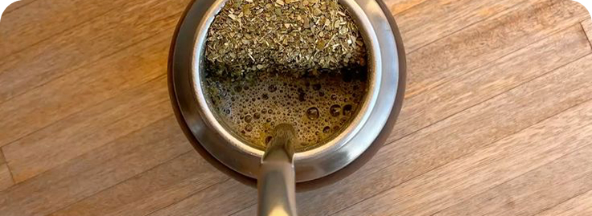

El mate es más que una bebida, es una tradición, un ritual y una forma de compartir and conectar.
Aquí vas a encontrar información sobre mates, bombillas, yerbas y consejos útiles para disfrutarlo al máximo.

“Cada mate tiene su historia”


Test: ¿Qué mate es el mejor para vos?
Descubrí qué estilo matero se adapta mejor a tu personalidad